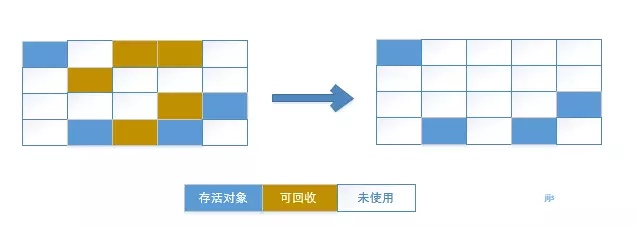

内存动态分配和垃圾收集技术是Java与C++之间的一个重要差异，正如书中的比喻，这是一堵“高墙”，墙外面的人想进去，墙里面的人想出来。
判定对象是否需要回收
1.引用计数算法
给每个对象添加一个引用计数器，每当有一个地方引用它，计数器值加1；当引用失效时，计数器值减1；计数器值为0的对象就是需要被回收的对象。
引用计数算法(Reference Counting)实现简单，判定效率高，在大部分场景下都是一个不错的算法，但是主流的Java虚拟机都没有采用该算法来管理内存，主要原因在于它很难解决对象之间相互循环引用的问题。下面给出一个简单的事例，当执行System.gc()方法时，objA和objB两个对象不能被回收。
public class ReferenceCountingGC {
public Object instance = null;
private static final int _1MB = 1024 * 1024;
// 该属性方便在GC日志中看清对象是否被回收
private byte[] bigSize = new byte[2 * _1MB];
public static void testGC(){
ReferenceCountingGC objA = new ReferenceCountingGC();
ReferenceCountingGC objB = new ReferenceCountingGC();
objA.instance = objB;
objB.instance = objA;
objA = null;
objB = null;
System.gc();
}
}
2.可达性分析算法
主流Java虚拟机为了解决上述循环引用问题，通常采用可达性分析算法(Reachability Analysis)来判定对象是否存活。
可达性分析可以算是数据流分析的一种，数据流分析的具体并不陌生，关键是分析起始点的设定。JVM的可达性分析算法通过一系列的称为“GC Roots”的对象作为起始点，从这些节点开始向下搜索，搜索所走过的路径称为引用链(Reference Chain)，当一个对象到GC Roots没有任何引用链相连时，就证明此对象是不可用的。如图中的object5、object6、object7因为不与GC Root相连，所以将被回收。
在Java语言中，GC Roots对象包括下面几种：
- 虚拟机栈中引用的对象。
- 方法区中类静态属性引用的对象（类中static修饰的属性）。
- 方法区中常量引用的对象（类中static final修饰的属性）。
- Native方法引用的对象(通过C++实现的代理程序，JVM通过调用代理程序来实际执行其中的Native方法)。
在JDK1.2之后，Java对引用的概念进行了扩充，将引用分为强引用、软引用、弱引用和虚引用4种。在不同的场景下，可能会对不同程度的引用进行回收。
垃圾收集算法
1.标记-清除算法
分为标记和清除两个步骤，采用上述方法对待回收内存进行标记后，统一在清除阶段进行清除。该算法主要有两个不足：
- 效率问题，标记和清除两个过程的效率都不高。
- 控件问题，标记清除之后会产生大量不连续的内存碎片，可能导致后续要分配较大对象时，找不到连续内存空间。 
2.标记-整理算法
该算法通常对老年代对象进行使用，可以看作是对标记-清除算法的改进。两者标记过程一致，但标记-整理算法不是直接对可回收对象进行清理，而是让所有存活的对象都向一端移动，然后直接清理掉端边界以外的内存。该算法解决了刚才提到的空间问题。
3.复制算法
为了解决标记算法存在的效率问题，复制算法诞生了。它将内存划分为大小相等的两块，每次都只使用其中的一块，当某一块用完，就将还存活的对象复制到另外一块上，然后再把已使用过的内存空间一次清理掉。该算法运行高效，且不会出现内存中大量碎片的情况。但是这种算法的代价是将内存缩小为原来的一半，太过浪费。
好在对于新生代对象，研究表明其中的对象98%是“朝生夕死”的，所以可以将内存划分为一块较大的Eden空间和两块较小的Survivor空间，每次使用Eden和一块Survivor。回收时将Eden和其中一块Survivor中的对象复制到另一块Survivor中。HotSpot虚拟机默认Eden和Survivor的大小比例为8:1，因此只有10%的内存会被浪费。如果另一块Survivor没有足够的空间存放存活对象，这些对象将直接通过分配担保机制进入老年代。

4.分代收集算法
这种算法根据对象存活周期的不同将内存划分为几块，对不同区块采用不同的收集算法。一般把Java堆分为新生代和老年代，新生代中每次垃圾收集时都发现有大批对象死去，就选用复制算法，只需要复制少量存货对象就可以。而老年代中对象存活率高、没有额外空间对它进行分配担保，就必须使用标记-清理或者标记-整理算法来进行回收。